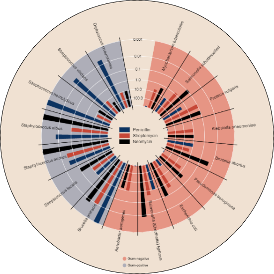

Python for research
@wwwaldaka Arnout Standaert
me?
researcher turned wannabe developer
job 1 — microbe modelling
job 2 — Oracle detour - LIMS
job 3 — exposure modelling
web dev enthousiast
my workplace?
health research
historical baggage: Excel …
smartass @wwwald arrives: MATLAB …
but now...
cheap sensors / IoT / large-scale measurements
multi-channel publishing of results & models
need for all-round powerful platform
Python!
all the versatility we need
low barrier to entry
scripting
interactive work
web platforms

visualization
modelling / numerics /
(niche) image analysis
(niche) bioinformatics
(niche) GIS
The SciPy stack
actually, almost chronologically
(predecessors of) NumPy
SciPy
IPython
Matplotlib
Pandas
... Sympy ... scikit-learn ... statsmodels ...
NumPy
base N-dimensional array data type
MATRICES!
C/C++ and Fortran facilities
matrix algebra
SciPy

builds on NumPy
science & engineering extensions
optimization
linear algebra
integration
interpolation
signal processing
image processing
IPython
rich interactive REPL
interactive data analysis
notebooks!*
* we'll get back to that
Matplotlib
2D plotting
mother of Py viz modules
efficient & accessible
base for advanced viz*
* patience, i'll show you
Pandas
higher level data structures
Series & DataFrames inspired by R
efficient & accessible analysis tools
godsend for quick & interactive data analysis
IPython notebook
in-browser interactive REPL
low barrier of entry!
interactive analysis
collaboration
reproducible research
versioning - GitHub
IPython Jupyter notebook
next gen IPy Notebook
multi-user server
pluggable kernel model
not only Python!
R, Julia, Ruby, Scala, Perl,
Octave, Matlab, Javascript,
Redis, Bash, …
Anaconda
all-in-one Python data science kickstart
integrated Python distribution
scientific & engineering focus
SciPy stack installed by default
conda (pip replacement)
... and so much more
visualization
Seaborn
fancy matplotlib
Bokeh
browser based output
Mayavi
advanced 3D visualization
... and so much more
integration
RPy — for heavy statistics
PL/Python — Postgres stored procedures
Numba, Cython — compile Py for performance
sqlalchemy — universal DB access
pywinauto — automating nasty proprietary interfaces
…
... and so much more
application specific
PIL / Pillow — image analysis
Biopython — bioinformatics
OGR/GDAL bindings — GIS analyses
...